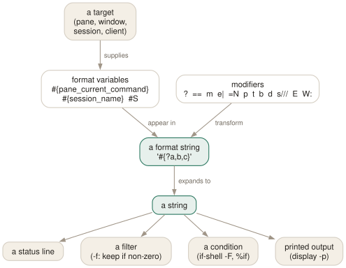

Day 09
Formats
The little expression language that runs the status line, filters and conditionals.
By the end of today you can
- read any #{…} expression you meet in someone else's config
- write conditionals, comparisons, string surgery and loops inside a format
- use formats as filters, as conditions, and as a way to query the server
One language, four jobs
A format is a string with #{…} holes in it. tmux expands it against a target — usually the active pane and everything reachable from it — and hands the result to whatever asked. The status line is a format. A -F listing is a format. A -f filter is a format that is treated as a boolean. So is the condition of %if in your config, and of if-shell -F.
That is why this day is worth forty minutes: it is the last general-purpose thing to learn in tmux. Everything after it is application.

#{…} string that draws your status line can be handed to -f as a filter (is it non-zero?), to if-shell -F as a condition, or to display -p to be printed. Learning it once pays four times.Variables
About 140 of them exist. A few have single-letter aliases that you will meet in every status line you read:
#S session_name #I window_index #P pane_index
#W window_name #F window_flags #D pane_id
#T pane_title #H host #h host_short
## a literal # #, a literal , #} a literal }
The ones you will reach for over and over:
pane_current_command- what is running in the pane right now
pane_current_path- its working directory — the one that makes
-cuseful client_prefix- 1 while the prefix has been pressed and tmux is waiting
window_zoomed_flag,window_panes- state worth showing in a status line
session_attached,session_windows- for choosing what to display per session
pane_in_mode,pane_mode- whether this pane is in copy mode, and which
Conditionals and comparisons
The workhorse is #{?condition,then,else}. The condition is a variable name if written bare, or a nested #{…} expression otherwise. It is true when it exists and is neither empty nor zero.
$ tmux display -p '#{?session_attached,attached,detached}'
$ tmux display -p '#{?window_zoomed_flag,ZOOM,}'
$ tmux display -p '#{?#{==:#{pane_current_command},vim},editing,shell}'
Comparisons and logic are prefix operators with a colon:
#{==:a,b} #{!=:a,b} #{<:a,b} #{>:a,b} #{<=:a,b} #{>=:a,b}
#{||:a,b} #{&&:a,b} #{!:a} #{!!:a} -- boolean, and canonicalise to 1/0
#{m:pattern,string} -- glob match; #{m/r:re,s} regex; #{m/ri:…} ignore case
#{C:pattern} -- search the pane's content; 0 or the line number
#{e|+|:2,3} -- arithmetic: + - * / m and comparisons
#{e|*|f|2:3.5,2} -- f = floating point, 2 = decimal places
String surgery
Modifiers go before the variable, separated by a colon. They compose, separated by semicolons.
#{=10:pane_title}- first 10 characters;
#{=-10:…}the last 10 #{=/10/…:pane_title}- the same, appending
…if it was trimmed #{p12:session_name}- pad to 12 columns;
#{p-12:…}pads on the left, which right-aligns the text #{n:window_name}- the length of the value;
#{w:…}its display width #{b:pane_current_path}- basename;
#{d:…}dirname #{t:window_activity}- a time value as a string;
#{t/p:…}a shorter, relative form #{t/f/%H#:%M:window_activity}- a custom strftime format — note the
#:, because a bare colon would end the modifier #{s/old/new/:window_name}- substitute throughout; the pattern is a regular expression, and a trailing
iignores case #{q:pane_current_path}- shell-quote the value — essential when a format is interpolated into a command
#{E:status-left}- expand the value of an option, rather than its name;
#{T:…}also runs it through strftime #{l:#{raw}}- literal — do not expand this at all
$ tmux display -p '#{=/12/…:pane_title}'
$ tmux display -p '#{b:pane_current_path}'
$ tmux display -p '#{t/f/%H#:%M:session_created}'
Loops
S:, W:, P: and L: repeat a format once for every session, window, pane or client. Two comma-separated formats can be given: the second is used for the current window, active pane or attached session.
$ tmux display -p '#{W:#{window_index}:#{window_name} ,[#{window_name}] }'
1:edit [run] 3:logs
$ tmux display -p '#{S:#{session_name}(#{session_windows}) }'
api(4) infra(1) notes(2)
A sort order can be appended — #{S/n:…} by name, /i by index, /t by activity time, with /r to reverse. This is exactly how the default status line builds its window list, which you can see for yourself with tmux show -g status-format.
Shell output, and the trap in it
#(command) inserts the last line of a shell command's output. It is how status lines grow load averages, battery levels and git branches.
set -g status-right "#(uptime | sed 's/.*load average: //') | %H:%M"
Formats as questions
The part people miss: formats make tmux queryable. Combine -f with -F and you have a small query language over your own workspace.
# which panes are running an editor?
$ tmux lsp -a -f '#{m:*vim*,#{pane_current_command}}' -F '#{pane_id} #{pane_current_path}'
# which windows are zoomed right now?
$ tmux lsw -a -f '#{window_zoomed_flag}' -F '#{session_name}:#{window_name}'
# which sessions has nobody looked at?
$ tmux ls -f '#{!:session_attached}' -F '#{session_name}'
# does any pane in this window show an error?
$ tmux display -p '#{C/ri:error}'
The same expressions work as conditions. In a config file, %if "#{==:#{host},laptop}" branches on the machine; in a binding, if-shell -F '#{window_zoomed_flag}' branches on state without spawning a shell at all.
New vocabulary
Commands
| Command | Does |
|---|---|
display-message -p '#{…}' | Evaluate a format and print it. The echo of tmux. |
display-message -a | List every format variable with its current value. |
display-message -v '#{…}' | Show how the format is parsed, step by step. |
list-panes -f '#{…}' | Filter a listing by a format that evaluates true. |
if-shell -F '#{…}' cmd | Run a command when a format is non-empty and non-zero. |
set-option -F name '#{…}' | Expand the format now and store the result. |
Options
| Option | Does |
|---|---|
pane-border-format | What is drawn on a pane's border line. |
pane-border-status | Where that line goes: off, top, bottom. |
automatic-rename-format | The format used to rename windows automatically. |
Today's configappend to ~/.tmux.conf
Label each pane on its own border with its index and what is running in it. The whole label is a format, so it can react: the zoom marker only appears when it applies.
set -wg pane-border-format " #{pane_index}: #{pane_current_command}#{?pane_zoomed_flag, [zoom],} "
set -wg pane-border-status top
The name tmux gives an unnamed window. The default is just the command; adding the directory makes three shells distinguishable at a glance.
set -wg automatic-rename-format "#{pane_current_command}:#{b:pane_current_path}"
Reload with tmux source-file ~/.tmux.conf and watch for errors in the status line.
Drillsdo these in a real terminal, today
Self-check
Answer out loud first, then unfold.
What does #{?#{==:#{pane_current_command},vim},E,-} evaluate to, and how do you read it?
Inside out. #{pane_current_command} is the command; #{==:x,vim} compares it with vim and yields 1 or 0; #{?cond,then,else} picks E or -. So: “E if this pane is running vim, otherwise a dash”.
The nesting is the only hard part of formats. Everything is #{ operator : arguments }, and the arguments can themselves be formats.
Why does #{?session_attached,yes,no} work, but #{?#{session_attached},yes,no} is what you see people write for other things?
The condition of ? is a variable name when written bare — tmux checks whether it exists and is non-zero. Wrapping it in #{…} makes it a nested expression instead, which is necessary as soon as the condition is a comparison or a match rather than a plain variable. Both forms are correct in their place, which is why real configs contain both.
You want a comma inside the “then” branch of a conditional. What breaks and what fixes it?
A bare comma ends the branch, because ? splits on commas. Escape it as #, — and likewise #} for a closing brace and ## for a literal #. The man page's own example is #{?pane_in_mode,#[fg=white#,bg=red],#[fg=red#,bg=white]}#W, where the commas inside the style directives have to be escaped.
How do you find out what variables exist, without the man page?
tmux display -p -a prints every format variable and its current value for the active pane — about 140 of them. tmux display -v '#{…}' traces how an expression is parsed when it is not doing what you expect. Between those two you rarely need the table in the manual.
Cheat sheet
#{var} #S #I #P #W #F #T #D #H ## #, #} literal # , }
#{?cond,then,else} cond is a bare variable, or a nested #{...}
#{==:a,b} #{!=:…} #{<:…} #{||:a,b} #{&&:…} #{!:a}
#{m:glob,s} #{m/r:re,s} #{C:pattern} match / search pane content
#{e|+|:2,3} #{e|*|f|2:3.5,2} arithmetic, f = float
#{=10:v} #{=/10/…:v} truncate #{p12:v} #{p-12:v} pad / right-align
#{b:v} #{d:v} base/dirname #{n:v} #{w:v} length / width
#{t:v} #{t/p:v} #{t/f/%H#:%M:v} times (escape the colon as #:)
#{s/a/b/:v} substitute #{q:v} shell-quote #{E:opt} expand option
#{W:fmt,curfmt} #{S:…} #{P:…} #{L:…} loops (+ /n /i /t /r sort)
#(shell cmd) last line of output, cached, never blocking
tmux display -p -a # every variable and its value — the real reference
tmux lsp -a -f '…' -F '…' # formats as a query language
Everything through Day 09
Keys
| Key | Does |
|---|---|
| C-bd | Detach this client. The session keeps running. |
| C-b$ | Rename the current session. |
| C-b? | List every key binding. q to leave. |
| C-b: | Open the tmux command prompt. |
| C-bt | Show a clock — a harmless way to prove the prefix works. |
| C-bC-b | Send a literal C-b to the program in the pane. |
| C-bc | Create a window at the lowest free index. |
| C-b, | Rename the current window — and pin the name. |
| C-bn | Next window by index. |
| C-bp | Previous window by index. |
| C-bl | Back to the last window you were in. The one to actually learn. |
| C-b0 | Jump straight to window 0 (likewise 1 … 9). |
| C-b' | Prompt for a window index — for windows above 9. |
| C-bw | Choose a window from an interactive tree with previews. |
| C-b& | Kill the current window, after a confirmation. |
| C-b. | Move the current window to a different index. |
| C-bi | Flash some information about the current window. |
| C-b% | Split left/right. The |-shaped key gives you a |-shaped border. |
| C-b" | Split top/bottom. |
| C-bLeft | Move to the pane to the left (likewise Right, Up, Down). |
| C-bo | Next pane in creation order. |
| C-b; | The previously active pane — the C-bl of panes. |
| C-bq | Flash the pane numbers; press a digit while they show to jump there. |
| C-bz | Zoom: this pane fills the window. Press again to restore. |
| C-bx | Kill this pane, after a confirmation. |
| C-bSpace | Cycle to the next preset layout. |
| C-bM-1 | even-horizontal — side by side in a row. |
| C-bM-2 | even-vertical — stacked in a column. |
| C-bM-3 | main-horizontal — one big pane on top. |
| C-bM-4 | main-vertical — one big pane on the left. |
| C-bM-5 | tiled — a grid. |
| C-bE | Spread the current pane and its neighbours out evenly. |
| C-bC-Left | Resize by one cell (hold to repeat). M-Left does five. |
| C-b{ | Swap this pane with the previous one; C-b} with the next. |
| C-bC-o | Rotate every pane through the layout; C-bM-o rotates back. |
| C-b* | Open a floating pane over the window — hovers above the layout. |
| C-b[ | Enter copy mode at the bottom of the history. |
| C-bPageUp | Enter copy mode already scrolled one page up. |
| C-b] | Paste the most recent buffer into this pane. |
| C-b= | Choose which buffer to paste, from a list with previews. |
| C-b# | List the paste buffers. |
| C-b- | Delete the most recent buffer. |
| q | In copy mode: leave. (Escape in emacs mode.) |
| /? | vi mode: search forward / backward; n and N repeat. |
| C-sC-r | emacs mode: incremental search forward / backward. |
| Space | vi mode: start a selection. C-Space in emacs mode. |
| v | vi mode: toggle rectangle (block) selection. R in emacs mode. |
| Enter | vi mode: copy the selection and leave. M-w in emacs mode. |
| gG | vi mode: top / bottom of the history. |
| C-bC | Customize mode: browse and change every option and key, with descriptions. |
| C-bR | Reload ~/.tmux.conf — after you add today's binding. |
| C-bs | Choose a session from the tree — with previews, tagging and filtering. |
| C-b( | Switch this client to the previous session. |
| C-b) | Switch this client to the next session. |
| C-bL | Switch back to the last session. The C-bl of sessions. |
| C-bD | Choose a client from a list and detach it. |
| C-b$ | Rename the current session. |
| C-b/ | Describe a key: press it and tmux tells you what it is bound to. |
| C-b? | List every binding in every table — really list-keys -N. |
Commands
| Command | Does |
|---|---|
tmux | Start the server if needed and create a session, attached. |
tmux new -s work | Create a session named work. |
tmux new -A -s work | Attach to work, creating it only if absent. |
tmux ls | List sessions on this server. Alias for list-sessions. |
tmux attach -t work | Attach this terminal to work. |
tmux attach -d -t work | Attach, detaching any other client first. |
tmux detach | Detach the current client, from inside or by target. |
tmux rename-session api | Rename the current session. |
tmux kill-session -t work | Destroy a session and everything in it. |
tmux kill-server | Destroy every session. The nuclear option. |
new-window | Create a window. Alias neww. |
new-window -n logs | Create it with a fixed name. |
new-window -c ~/src/api | Create it with that working directory. |
new-window -d | Create it but do not switch to it. |
new-window -a -t 2 | Insert after window 2, shifting the rest along. |
rename-window api | Rename the current window. |
select-window -t :3 | Switch to window 3 of the current session. |
last-window | Switch to the previously current window. |
kill-window -t :logs | Kill a window by name. |
list-windows | List windows in the session. Alias lsw. |
choose-tree -w | The interactive picker behind C-bw. |
split-window -h | Split left/right. Alias splitw. |
split-window -v | Split top/bottom. The default if neither is given. |
split-window -c ~/src | Start the new pane in that directory. |
split-window -l 30% | Give the new pane 30% of the space (-l 20 for cells). |
split-window -b | Put the new pane before — above or to the left of — the old one. |
split-window -f -h | Split the full window height, not just the current pane. |
select-pane -L | Move to the pane on the left (-R -U -D likewise). |
select-pane -t 2 | Move to pane 2 of this window. |
last-pane | Back to the previously active pane. |
resize-pane -Z | Toggle zoom. |
resize-pane -x 100 -y 30 | Resize to an absolute size, cells or %. |
select-layout tiled | Apply a named layout. |
select-layout -E | Spread evenly (what C-bE runs). |
select-layout -o | Undo the most recent layout change. |
list-panes | List panes with index, size and command. Alias lsp. |
kill-pane -a | Kill every pane except this one. |
swap-pane -D | Swap with the next pane, keeping focus behaviour sane. |
copy-mode | Enter copy mode; -u starts a page up, -e exits at the bottom. |
send-keys -X begin-selection | How every copy-mode key is implemented. -X means “to the mode”. |
list-buffers | Show the buffer stack. Alias lsb. |
set-buffer "text" | Put a literal string into a buffer from a script. |
load-buffer file | Read a file into a buffer (- for stdin). |
save-buffer file | Write a buffer out to a file (- for stdout). |
show-buffer | Print the newest buffer. |
paste-buffer -t :1.0 | Paste into a specific pane, not necessarily this one. |
delete-buffer -b name | Remove one buffer. |
capture-pane -p -S -3000 | Dump the last 3000 lines of history to stdout. |
clear-history | Throw away a pane's scrollback. Alias clearhist. |
set-option -g name value | Set a global session option. Alias set. |
set-option -w name value | Set a window option (for the current window). |
set-option -p name value | Set a pane option (for the current pane). |
set-option -s name value | Set a server option. |
set-option -u name | Unset, so the value is inherited again. |
set-option -a name value | Append to a string or style option instead of replacing it. |
show-options -g | Show global session options. Alias show. |
show-options -A | Show them including inherited values, marked with *. |
show-options -gv history-limit | Print just the value of one option. |
source-file ~/.tmux.conf | Run a file of tmux commands now. Alias source. |
customize-mode | The interactive option browser behind C-bC. |
new-session -d -s api | Create a session in the background and stay where you are. |
new-session -A -s api | Attach if it exists, create if it does not. |
new-session -c ~/src/api -s api | Create with a starting directory. |
switch-client -t api | Move this client to another session, without detaching. |
switch-client -l | Back to the previous session. |
has-session -t api | Exit 0 if it exists. The if in every wrapper script. |
attach-session -d -t api | Attach here and detach whoever else was looking. |
list-clients | Which terminals are attached to what. Alias lsc. |
detach-client -s api | Detach every client from that session. |
kill-session -a | Kill every session except the current one. |
choose-tree -Zs | The session picker behind C-bs. |
tmux neww \; splitw -h | Two commands in one invocation. Note the escaped semicolon. |
display-message -p '#{pane_id}' | Print a value to stdout instead of the status line. |
list-panes -a | Every pane on the server, not just this window. |
list-windows -a | Every window on the server. |
list-sessions -F '#{session_name}' | One field per line — the shape scripts want. |
list-commands | Every command tmux knows, with its synopsis. Alias lscm. |
list-commands neww | The synopsis for one command. |
bind-key c new-window | Bind in the prefix table. Alias bind. |
bind-key -n M-Left select-pane -L | Bind without a prefix (-n = -T root). |
bind-key -r H resize-pane -L | Repeatable: keep tapping without re-pressing the prefix. |
bind-key -N "note" x cmd | Attach a note, shown by C-b?. |
bind-key -T mytable g cmd | Bind in a table of your own. |
unbind-key -T prefix x | Remove a binding. Alias unbind. |
list-keys -T copy-mode-vi | Read a whole mode as data. Alias lsk. |
list-keys -N | Only keys with notes, in a readable form. |
send-keys -X copy-selection | Send a command into a mode. |
send-prefix | Pass the prefix key through to the program. |
switch-client -T mytable | Make the next key be looked up in another table. |
display-message -p '#{…}' | Evaluate a format and print it. The echo of tmux. |
display-message -a | List every format variable with its current value. |
display-message -v '#{…}' | Show how the format is parsed, step by step. |
list-panes -f '#{…}' | Filter a listing by a format that evaluates true. |
if-shell -F '#{…}' cmd | Run a command when a format is non-empty and non-zero. |
set-option -F name '#{…}' | Expand the format now and store the result. |
Options
| Option | Does |
|---|---|
automatic-rename | Window renames itself after the running command. On by default. |
automatic-rename-format | The format used when it does. Defaults to the pane's command. |
allow-rename | Whether a program in the pane may rename the window by escape sequence. |
main-pane-width | Width of the big pane in the main-vertical layouts. Accepts %. |
main-pane-height | Height of the big pane in the main-horizontal layouts. |
tiled-layout-max-columns | Cap the columns in the tiled layout; 0 means no cap. |
mode-keys | vi or emacs key bindings inside copy mode. Default emacs. |
history-limit | Lines of scrollback kept per pane. Default 2000, which is stingy. |
copy-command | Shell command that bare copy-pipe pipes to — your clipboard tool. |
set-clipboard | Whether tmux sets the terminal's clipboard with OSC 52. |
word-separators | What counts as a word boundary for w and b. |
wrap-search | Whether searches wrap around the end of the history. On by default. |
base-index | Index the first window gets. Default 0. |
pane-base-index | Index the first pane gets. Default 0. A window option. |
renumber-windows | Close the gaps in window indices when one is killed. |
escape-time | Milliseconds tmux waits to decide whether Escape began a key sequence. |
focus-events | Pass terminal focus in/out through to the programs in panes. |
display-time | How long status line messages stay up. 750 ms by default. |
default-terminal | The $TERM new panes get. Must be a screen/tmux derivative. |
detach-on-destroy | What a client does when its session dies. off moves it to another session instead. |
destroy-unattached | Destroy a session once the last client leaves. Off by default, and rightly. |
default-size | Size for sessions created detached, when no client dictates one. |
window-size | Whether a window sizes to the largest, smallest or latest attached client. |
aggressive-resize | Size each window to the clients actually viewing it, not the whole session. |
command-alias | Server option: an array of your own command aliases. |
prefix | The prefix key. None disables it entirely. |
prefix2 | A second prefix key, for when you want both C-b and C-a. |
repeat-time | Milliseconds the prefix stays live after a -r key. Default 500. |
initial-repeat-time | The same, for the first press of a repeat sequence. |
key-table | Which table a client starts in. The lever behind modal setups. |
pane-border-format | What is drawn on a pane's border line. |
pane-border-status | Where that line goes: off, top, bottom. |
automatic-rename-format | The format used to rename windows automatically. |